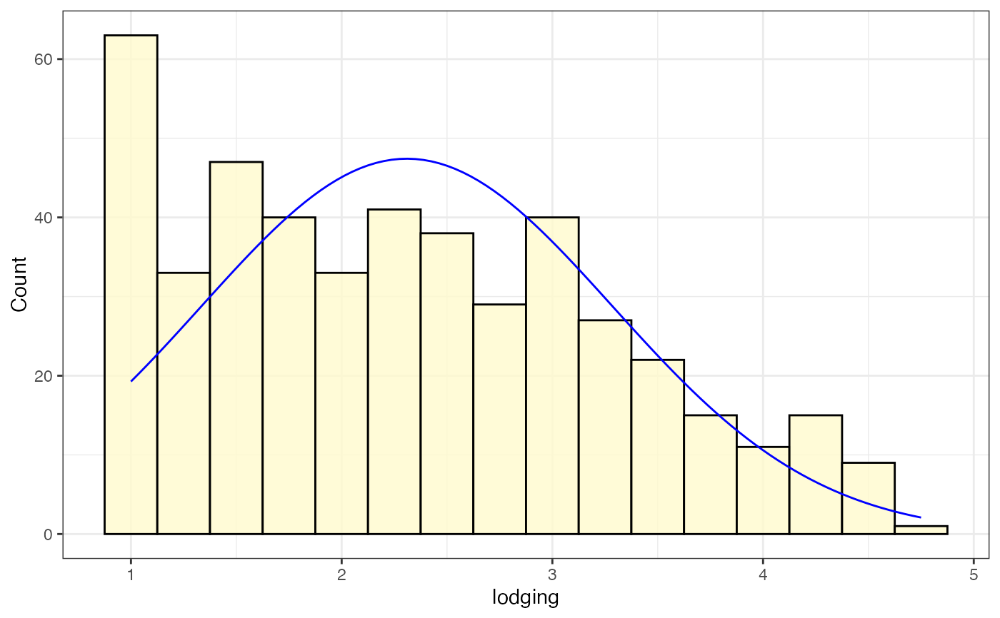
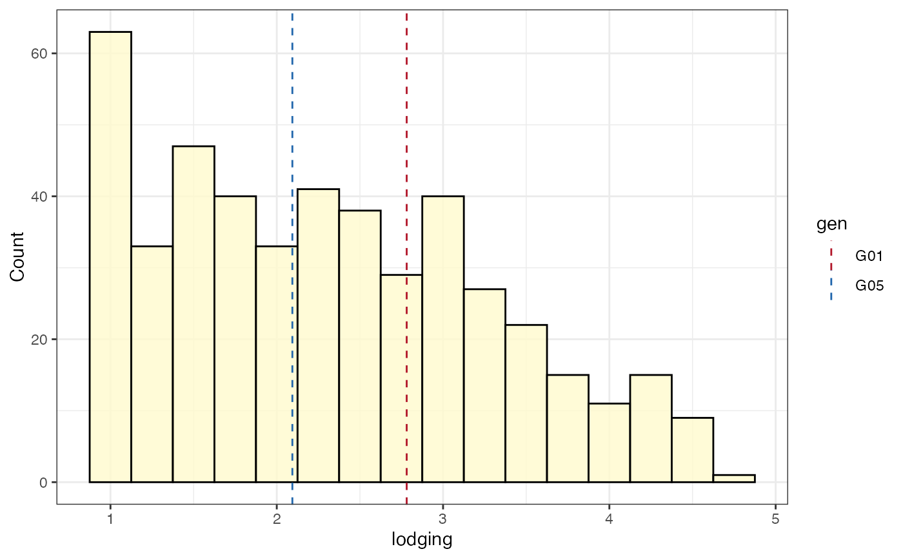
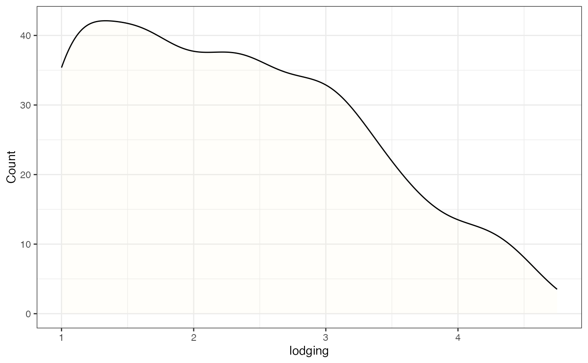
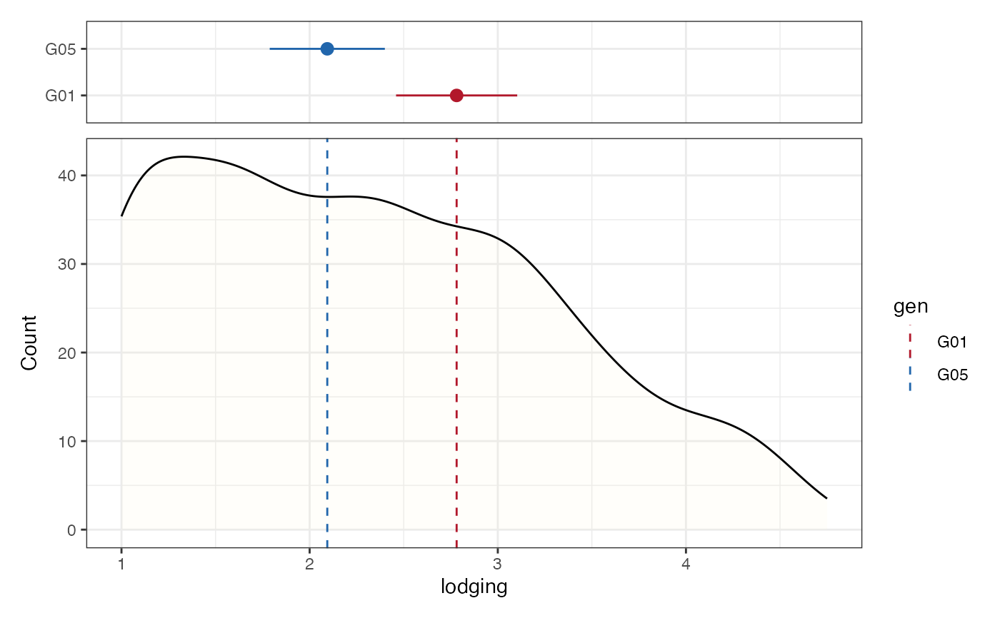

Plot Frequency Distribution and Density Plots
Usage
freq_distribution(
data,
trait,
genotype = NULL,
hist = TRUE,
hist.col = "gray45",
hist.border = TRUE,
hist.border.col = "black",
hist.alpha = 0.8,
bw.adjust = 0.5,
density = TRUE,
density.col = "black",
density.fill = "gray45",
density.alpha = 0.1,
normal.curve = TRUE,
normal.curve.col = "black",
normal.curve.linetype = "solid",
highlight.mean = TRUE,
highlight.mean.col = "black",
show.counts = TRUE,
count.text.col = "black",
count.text.size = 3,
highlight.genotype.vline = FALSE,
highlight.genotype.pointrange = FALSE,
highlights = NULL,
highlight.col = highlight.mean.col,
standardize.xrange = TRUE
)Arguments
- data
The data as a data frame object. The data frame should possess columns specifying the trait (and genotypes if
highlight.genotype.* = TRUE).- trait
Name of column specifying the trait as a character string.
- genotype
Name of column specifying the group as a character string. Required only when
highlight.genotype.* = TRUE.- hist
logical. If
TRUE, the histogram is plotted. Default isTRUE.- hist.col
The histograme colour.
- hist.border
logical. If
TRUE, histogram border is also plotted. Default isTRUE.- hist.border.col
The histogram border colour.
- hist.alpha
Alpha transparency for the histogram.
- bw.adjust
Multiplicative bin width adjustment. Default is 0.5 which means use half of the default bandwidth.
- density
logical. If
TRUE, the kernel density is plotted. Default isTRUE.- density.col
The kernel density colour.
- density.fill
The kernel density fill colour.
- density.alpha
Alpha transparency for the kernel density
- normal.curve
logical. If
TRUE, a normal curve is plotted. Default isTRUE.- normal.curve.col
The colour of the normal curve.
- normal.curve.linetype
Linetype for the normal curve. See
aes_linetype_size_shape.- highlight.mean
logical. If
TRUE, the mean value is highlighted as a vertical line. Default isTRUE.- highlight.mean.col
The colour of the vertical line representing mean.
- show.counts
If
TRUE, group wise counts are plotted as a text annotation. Default isTRUE.- count.text.col
The colour of the count text annotation.
- count.text.size
The size of the count text annotation.
- highlight.genotype.vline
logical. If
TRUE, the mean values of genotypes specified inhighlightsare plotted as vertical lines.- highlight.genotype.pointrange
logical. If
TRUE, the mean ± stand error values of genotypes specified inhighlightsare plotted as a separate pointrange plot.- highlights
The genotypes to be highlighted as a character vector.
- highlight.col
The colour(s) to be used to highlight genotypes specified in
highlightsin the plot as a character vector. Must be valid colour values in R (named colours, hexadecimal representation, index of colours [1:8] in default Rpalette()etc.).- standardize.xrange
logical. If
TRUE, the original plot and the pointrange plot x axis ranges are standardized. Default isTRUE.
Value
Either the frequency distribution plot as a histogram or kernel
density ggplot2 object, or a list containing a ggplot2
pointrange plot and the histogram/kernel density plot.
Examples
library(agridat)
library(ggplot2)
library(patchwork)
soydata <- australia.soybean
soydata$gen <- as.character(soydata$gen)
checks <- c("G01", "G05")
check_cols <- c("#B2182B", "#2166AC")
# Frequency distribution as histogram
freq_hist1 <-
freq_distribution(data = soydata, trait = "lodging",
hist = TRUE,
hist.col = "lemonchiffon",
density = FALSE,
normal.curve = FALSE, highlight.mean = FALSE,
show.counts = FALSE)
freq_hist1
# Frequency distribution as histogram with normal curve
freq_hist2 <-
freq_distribution(data = soydata, trait = "lodging",
hist = TRUE,
hist.col = "lemonchiffon",
density = FALSE,
normal.curve = TRUE, normal.curve.col = "blue",
highlight.mean = FALSE,
show.counts = FALSE)
freq_hist2

# Frequency distribution as histogram with mean highlighted
freq_hist3 <-
freq_distribution(data = soydata, trait = "lodging",
hist = TRUE,
hist.col = "lemonchiffon",
density = FALSE, normal.curve = FALSE,
highlight.mean = TRUE, highlight.mean.col = "red",
show.counts = FALSE)
freq_hist3
# Frequency distribution as histogram with count value
freq_hist4 <-
freq_distribution(data = soydata, trait = "lodging",
hist = TRUE,
hist.col = "lemonchiffon",
density = FALSE, normal.curve = FALSE,
highlight.mean = FALSE,
show.counts = TRUE, count.text.col = "red")
freq_hist4
# Frequency distribution as histogram with check values
# highlighted as vertical lines
freq_hist5 <-
freq_distribution(data = soydata, trait = "lodging",
hist = TRUE,
hist.col = "lemonchiffon",
density = FALSE, normal.curve = FALSE,
highlight.mean = FALSE, show.counts = FALSE,
genotype = "gen",
highlight.genotype.vline = TRUE, highlights = checks,
highlight.col = check_cols)
freq_hist5

# Frequency distribution as histogram with check values
# highlighted as a separate pointrange plot
freq_hist6 <-
freq_distribution(data = soydata, trait = "lodging",
hist = TRUE,
hist.col = "lemonchiffon",
density = FALSE, normal.curve = FALSE,
highlight.mean = FALSE, show.counts = FALSE,
genotype = "gen",
highlight.genotype.vline = TRUE,
highlight.genotype.pointrange = TRUE,
highlights = checks,
highlight.col = check_cols)
freq_hist6[[1]] <-
freq_hist6[[1]] +
theme(axis.ticks.x = element_blank(),
axis.text.x = element_blank())
wrap_plots(freq_hist6[[1]], plot_spacer(), freq_hist6[[2]],
ncol = 1, heights = c(1, -0.5, 4))
# Frequency distribution as kernel density plot
freq_dens1 <-
freq_distribution(data = soydata, trait = "lodging",
hist = FALSE,
density = TRUE,
density.fill = "lemonchiffon",
normal.curve = FALSE, highlight.mean = FALSE,
show.counts = FALSE)
freq_dens1

# Frequency distribution as kernel density plot with mean highlighted
freq_dens2 <-
freq_distribution(data = soydata, trait = "lodging",
hist = FALSE,
density = TRUE,
density.fill = "lemonchiffon",
normal.curve = FALSE,
highlight.mean = TRUE, highlight.mean.col = "red",
show.counts = FALSE)
freq_dens2
# Frequency distribution as kernel density plot with count value
freq_dens3 <-
freq_distribution(data = soydata, trait = "lodging",
hist = FALSE,
density = TRUE,
density.fill = "lemonchiffon",
normal.curve = FALSE,
highlight.mean = FALSE,
show.counts = TRUE, count.text.col = "red")
freq_dens3
# Frequency distribution as kernel density plot with check values
# highlighted as vertical lines
freq_dens4 <-
freq_distribution(data = soydata, trait = "lodging",
hist = FALSE,
density = TRUE,
density.fill = "lemonchiffon",
normal.curve = FALSE,
highlight.mean = FALSE, show.counts = FALSE,
genotype = "gen",
highlight.genotype.vline = TRUE, highlights = checks,
highlight.col = check_cols)
freq_dens4
# Frequency distribution as kernel density plot with check values
# highlighted as a separate pointrange plot
freq_dens5 <-
freq_distribution(data = soydata, trait = "lodging",
hist = FALSE,
density = TRUE,
density.fill = "lemonchiffon",
normal.curve = FALSE,
highlight.mean = FALSE, show.counts = FALSE,
genotype = "gen",
highlight.genotype.vline = TRUE,
highlight.genotype.pointrange = TRUE,
highlights = checks,
highlight.col = check_cols)
freq_dens5[[1]] <-
freq_dens5[[1]] +
theme(axis.ticks.x = element_blank(),
axis.text.x = element_blank())
wrap_plots(freq_dens5[[1]], plot_spacer(), freq_dens5[[2]],
ncol = 1, heights = c(1, -0.5, 4))
